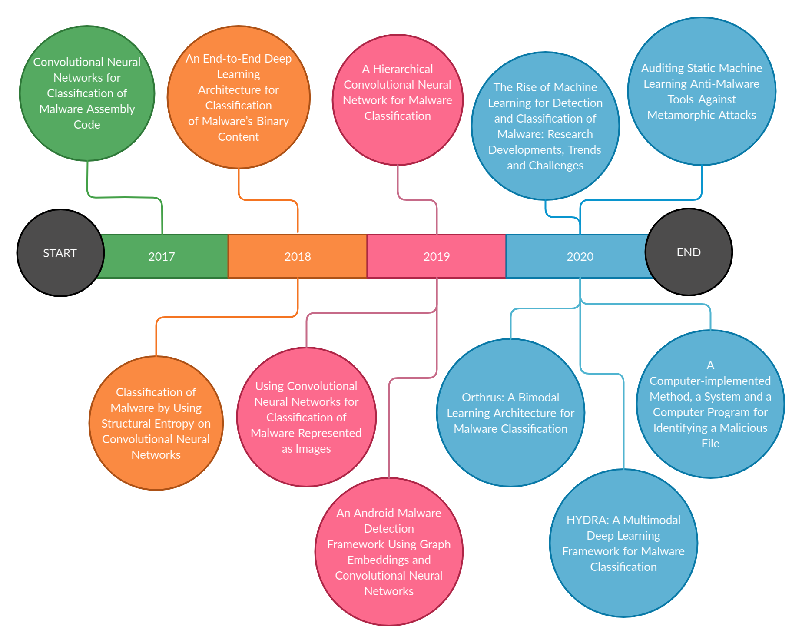
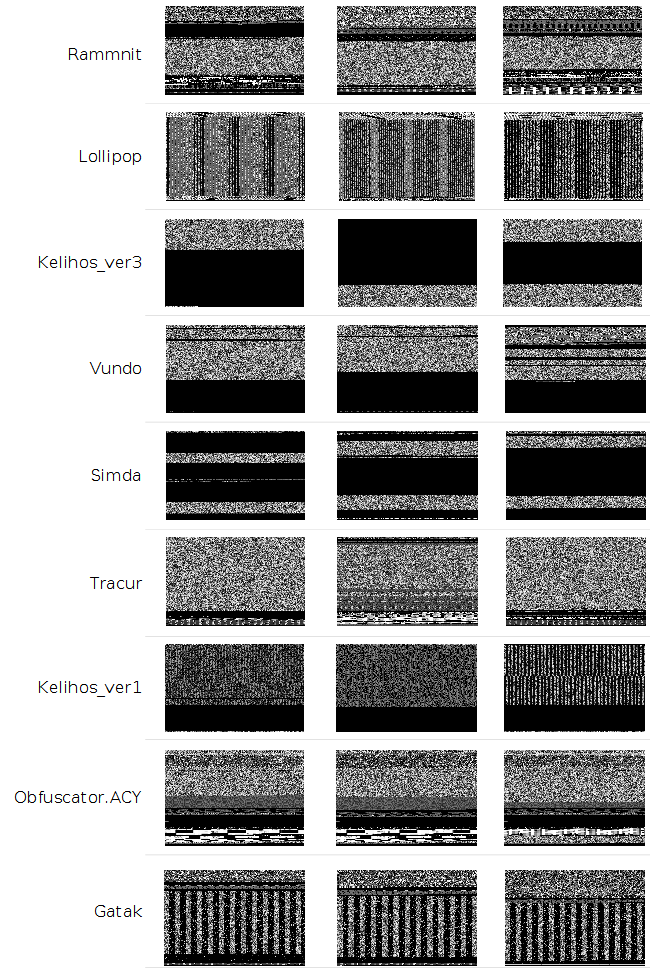
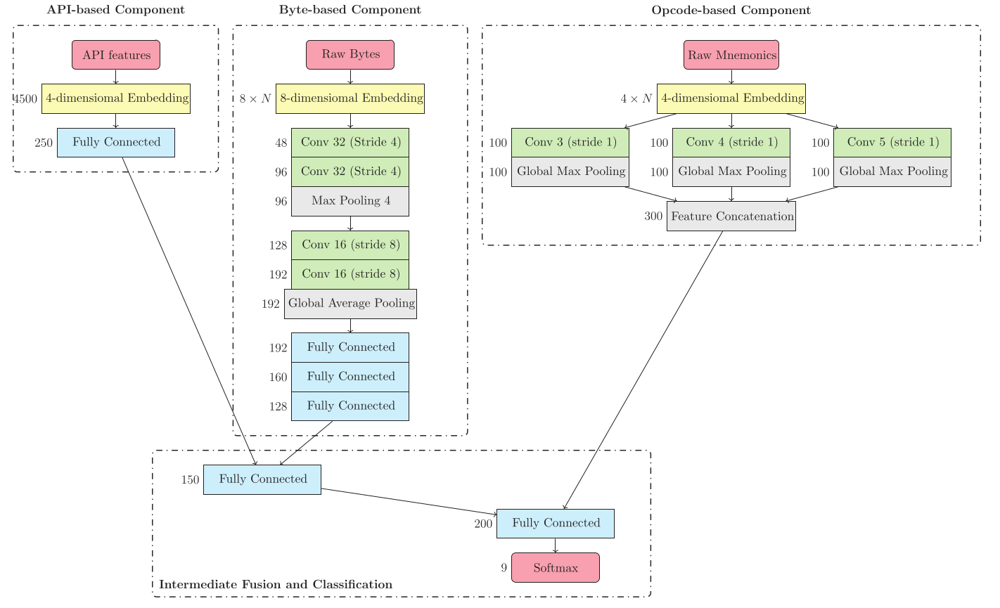

I am a postdoctoral researcher at CeADAR, Ireland’s National Centre for Applied AI.
I received my PhD in Engineering and Information Technologies from the University of Lleida. In 2016, I received my Master’s in Artificial Intelligence from the Polytechnic University of Catalonia. My Ph.D. Thesis focused on the design, implementation, and evaluation of ML-based approaches for the task of malware detection and classification, due to its ability to handle large volumes of data and to generalize to never-before-seen malware.
Research
My research interests lie at the intersection of Machine Learning (ML) and Information Security. My work has mainly focused on building and attacking malware detectors using a wide range of statistical learning theories, including Machine Learning, Deep Learning, Transfer Learning, Adversarial Learning, and Deep Reinforcement Learning.
Following you can find a selected subset of journal and conference publications. Visit Google Scholar for a complete list of published articles.
Enhancing the Insertion of NOP Instructions to Obfuscate Malware via Deep Reinforcement Learning.
D. Gibert, M. Fredrikson, C. Mateu, J. Planes, Q. Le.
Journal Computers & Security. 2021.PDF
A computer-implemented method, a system and a computer program for identifying a malicious file.
D. Solís, G. Cervelló, A. Puigventós, D. Gibert, J. Planes, T. Alsinet, C. Mateu.
WO Patent WO2021018929A1. 2020.PDF
Auditing static machine learning anti-malware tools against metamorphic attacks.
D. Gibert, C. Mateu, J. Planes, J. Marques-Silva.
Journal Computers & Security. 2020.PDF
HYDRA: A Multimodal Deep Learning Framework for Malware Classification.
D. Gibert, C. Mateu, J. Planes.
Journal of Computers & SecurityPDF
The rise of machine learning for detection and classification of malware: Research developments, trends and challenges.
D. Gibert, C. Mateu, J. Planes.
Journal of Network and Computer Applications. 2020.PDF
Orthrus: A Bimodal Learning Architecture for Malware Classification.
D. Gibert, C. Mateu, J. Planes.
Proceedings of the International Joint Conference on Neural Networks (IJCNN'20)PDF
Using convolutional neural networks for classification of malware represented as images.
D. Gibert, C. Mateu, J. Planes, R. Vicens.
Journal of Computer Virology and Hacking Techniques. 2019.PDF
A Hierarchical Convolutional Neural Network for Malware Classification.
D. Gibert, C. Mateu, J. Planes.
Proceedings of the International Joint Conference on Neural Networks (IJCNN'19)PDF
An end-to-end deep learning architecture for classification of malware’s binary content.
D. Gibert, C. Mateu, J. Planes, R. Vicens.
Proceedings of the International Conference on Artificial Neural Networks (ICANN'18)PDF
Classification of malware by using structural entropy on convolutional neural networks.
D. Gibert, C. Mateu, J. Planes, R. Vicens.
Proceedings of the Thirty-Second Conference on Artificial Intelligence, (AAAI-18), the 30th innovative Applications of Artificial Intelligence, and the 8th Symposium on Educational Advances in Artificial IntelligencePDF
Convolutional neural networks for classification of malware assembly code.
D. Gibert, C. Mateu, J. Planes, D. Solis, R. Vicens.
Recent Advances in Artificial Intelligence Research and Development: Proceedings of the 20th International Conference of the Catalan Association for Artificial IntelligencePDF
My Thesis in 10 Minutes
The fight against malware has never stopped since the dawn of computing. This fight has turned out to be a never-ending and cyclical arms race: as security analysts and researchers improve their defenses, malware developers continue to innovate, find new infection vectors and enhance their obfuscation techniques. Lately, due to the massive growth of malware streams, new methods have to be devised to complement traditional detection approaches and keep pace with new attacks and variants.
My thesis was built upon the work performed in my MsC and it further explores the use of machine learning-based methods to detect and classify malware, due to its ability to handle large volumes of data and to generalize to never-before-seen malware. More specifically, my dissertation presents various alternatives to manual feature engineering for the task of malware detection and classification.
To achieve this goal, research was divided into two main parts.
The first part consisted of the automation of the feature engineering process through deep learning. Deep learning replaces the feature engineering process by an underlying system, which typically consists of a neural network (NN) with multiple layers, that performs both feature learning and classification. With deep learning one can start with raw data as features will be automatically created by the network during the training procedure. When speaking of malware, and more specifically, malicious software targeting the Windows operating system, raw data refer to either the hexadecimal representation of malware’s binary content or the assembly language source code of the executable. Thus, we explored both representations during the development of the thesis.
The second part explores mechanisms to combine multiple modalities of information to increase the robustness of deep learning classifiers. Modalities are, essentially, channels of information. These data from multiple sources are semantically correlated, and sometimes provide complementary information to each other, thus reflecting patterns that are not visible when working with individual modalities on their own. Consequently, by only taking as input the raw bytes or opcodes a great deal of useful information for classification is overlooked, such as structural information of the Portable Executable (PE) file, the import address table (IAT) which is used as a lookup table when the application is calling a function from a different module, etcetera. Subsequently, in the second part of the thesis various ways to combine multiple modalities of information in deep learning architectures are investigated.
The following Figure presents an overview of the research work done during my PhD studies. For more information about each paper I refer the reader to the original publications or the following link to my thesis.

Fig.1 - Thesis timeline.
Selected Publications
The Rise of Machine Learning for Detection and Classification of Malware: Research Developments, Trends and Challenges
This article provides a systematic and detailed overview of machine learning techniques to tackle the problem of malware detection and classification and in particular, deep learning techniques.
The main contributions of this article to the state-of-the-art are the following: (1) it provides a complete description of the methods and features in a traditional machine learning workflow for malware detection and classification; (2) it explores the challenges and limitations of traditional machine learning; (3) it analyzes recent trends and developments in the field with special emphasis on deep learning approaches; (4) it presents the research issues and unsolved challenges of the state-of-the-art techniques; and (5) it discusses new directions of research. This survey aims to help researchers to have an understanding of the malware detection field and of the new developments and directions of research explored by the scientific community to tackle the problem.
Convolutional Neural Networks for Classification of Malware Assembly Code
The main idea behind this paper is to build a static classifier to group malware into families based on their assembly language source code without relying on the manual extraction of n-gram features. The assembly language source code of a computer program is the low-level representation of the program’s statements and machine code instructions. Therefore, the problem of malware classification can be modeled as a text classification task by preprocessing the assembly files and extracting their assembly language instructions. The simplest representation is to retain only the mnemonic of the instruction. That is, on encountering the instruction add esp 10h we simply extract the add mnemonic. The main argument behind this representation is that it will generalize better as it would not be affected by small permutations in the arguments and thus, the obfuscation technique known as register reassignment would not alter the output of the classifier. Primarily, this obfuscation technique switches registers from generation to generation without altering the behavior of the program code.
To build the static classifier, we introduced a shallow convolutional neural network (CNN) architecture that extracts n-gram like features from malware’s machine instructions.
The main takeaways of this research article are as follows: (1) the required time for the feature extraction and classification process is lower than the computational time required to extract the N-grams for N ≥ 2; (2) although state-of-the-art multimodal approaches outperform our classifier, it has greater predictive power in comparison to opcode-based approaches in the literature and achieves higher classification accuracy than almost every other subset of features, i.e. API features, section features, etcetera.
Classification of Malware Using Structural Entropy on Convolutional Neural Networks
To evade detection, malware authors employ a variety of obfuscation techniques to hide malicious code inside executables. The most common are encryption and compression, which are employed in most of the malware samples. In the information security industry, a common practice to detect the presence of encrypted or compressed segments hidden beneath portable executables is entropy analysis. In general, segments of code that have been compressed or encrypted tend to have higher entropy than native code.
In information theory, entropy (more specifically, Shannon’s entropy) is the expected value of the information contained in each message. Generally speaking, the entropy of a bytes sequence refers to the amount of disorder (uncertainty) or its statistical variation. If occurrences of all values are the same, the entropy will be larger. On the contrary, if certain byte values occur with high probabilities, the entropy value will be smaller. However, the use of simple entropy statistics may not be enough to detect sophisticated malware. Authors sometimes try to conceal encrypted or compressed code in a way that they pass through high entropy filters. For instance, they may add additional padding to reduce the mean file entropy. Thus, researchers started analyzing what is defined as the structural entropy of a file. In other words, each executable file is represented as a stream of entropy values, where each value describes the amount of entropy over a small chunk of code in a specific location of the file. Next figure displays the structural entropy of various malware executables belonging to two different families. It can be observed that the entropy streams extracted from malware samples belonging to the same family appear to be similar while distinct from those belonging to different families.
Fig.2 - Structural entropy representation of samples belonging to the Ramnit and Gatak families. As a result, by representing executable files as a stream of entropy values, the task of malware classification can be described as a time series classification problem.
Using Convolutional Neural Networks for Classification of Malware Represented as Images
In this paper, malicious software is visualized as gray scale images since they capture minor changes while retaining the global structure of the executable helping to detect variations. To visualize a malware sample as an image, every byte has to be interpreted as one pixel in an image. Then, the resulting array has to be organized as a 2-D array and visualized as a gray scale image.

Fig.3 - Grayscale image representation of malware belonging to different families. The figure above shows the representation of samples of malware belonging to nine different families as gray scale images. It can be observed that images of software executables from a given family are similar visually while distinct from those belonging to a different family. The main benefit of visualizing a malicious executable as an image is that the different sections of a binary can be easily differentiated. In addition, malware authors only used to change a small part of the code to produce new variants. Thus, if old malware is re-used to create new binaries the resulting ones would be very similar. Additionally, by representing malware as an image it is possible to detect the small changes while retaining the global structure of samples belonging to the same family. Thus, this research article proposes a file agnostic deep learning approach for malware categorization to efficiently group malicious software into families based on a set of discriminant patterns extracted from their visualization as gray scale images
HYDRA: a multimodal deep learning framework for malware classification
This paper presents a framework for malware classification that combines both hand-crafted feature engineered and end-to-end components in a wide & deep learning architecture. The aim of this work is to combine various types of features to discover and learn the relationships between distinct modalities and maximize the benefits of multiple feature types to reflect the characteristics of malware executables. This is achieved through a modular architecture that can be broken down into three subnetworks, according to the different types of input in the system:
The list of Windows API function calls.
The sequence of assembly language instructions representing malware’s assembly language source code.
The sequence of hexadecimal values representing malware’s binary content.
An extensive analysis of state-of-the-art methods on the Microsoft Malware Classification Challenge benchmark shows that the proposed solution achieves comparable results to gradient boosting methods in the literature and higher yield in comparison with deep learning approaches.

Fig.4 - HYDRA: a modular architecture for classifying malware.